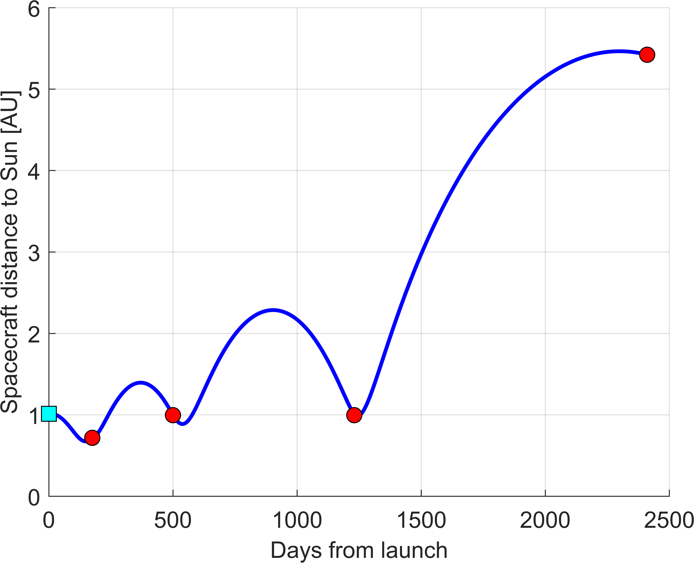
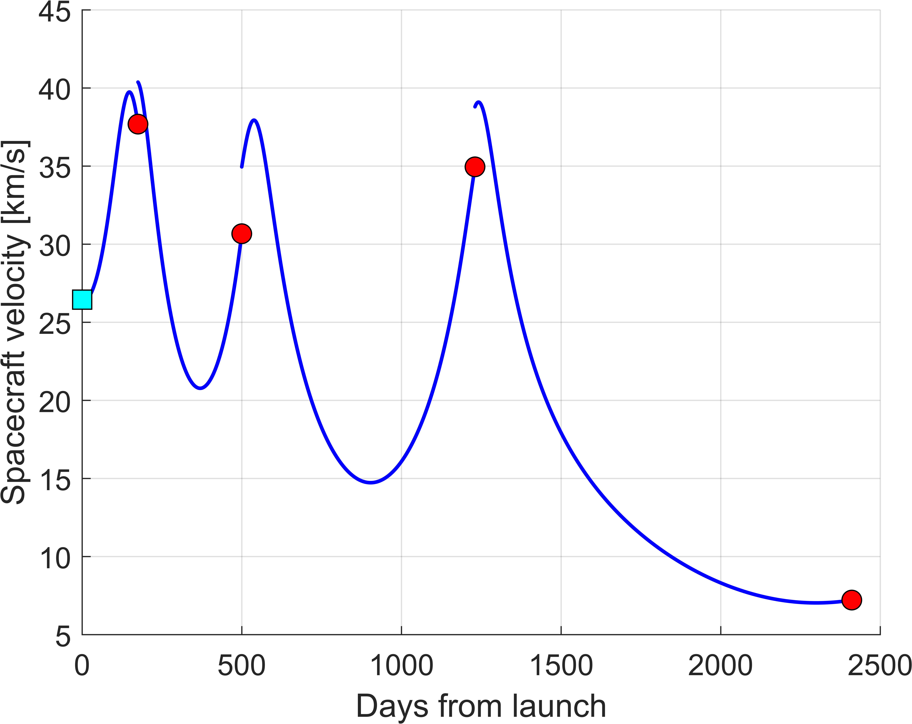

Trips to Jupiter
This tutorial allows to run a simple test script with ASTRA for a mission towards Jupiter. Different sequences will be optimized, just to see different options for ASTRA.
Earth-Venus-Earth-Mars-Earth-Jupiter
First sequence to analyse is the Earth-Venus-Earth-Mars-Earth-Jupiter (EVEMEJ), that has been considered for JUICE mission.
This tutorial is based on this script. This allows to optimize the sequence either with SODP (single-objective dynamic programming) or with MODP (multi-objective dynamic programming). A breakdown of the minimum input parameter needed is provided here.
From this script, one needs to call ASTRA and building the mex functions (namely Lambert solver, defects function, and low-thrust module):
clearDeleteAdd;
Then one proceeds to select appropriate input parameters.
%% --> input section
% --> clear INPUT and define new ones
try clear INPUT; catch; end; clc;
% --> sequence to be optimized
INPUT.idcentral = 1;
seq = [ 3 2 3 4 3 5 ]; res = [ ];
%%%%%%%%%% multi-rev. options %%%%%%%%%%
maxrev = 0; % --> max. number of revolutions (round number)
chosenRevs = differentRuns_v2(seq, maxrev); % --> generate successive runs
[INPUT.chosenRevs, INPUT.res] = processResonances(chosenRevs, res); % --> process the resonances options
[INPUT.chosenRevs] = maxRevOuterPlanets(seq, INPUT.chosenRevs); % --> only zero revs. on outer planets
%%%%%%%%%% multi-rev. options %%%%%%%%%%
%%%%%%%%%% set departing options %%%%%%%%%%
t0 = date2mjd2000([2023 1 1 0 0 0]); % --> initial date range for launch (MJD2000)
tf = t0 + 1*365.25; % --> final date range for launch (MJD2000)
dt = 2.5; % --> step size in launch window (days)
INPUT.depOpts = [t0 tf dt];
%%%%%%%%%% set departing options %%%%%%%%%%
%%%%%%%%%% set options %%%%%%%%%%
INPUT.opt = 2; % --> (1) is for SODP, (2) is for MODP, (3) is for DATES, (4) is for YEARS - MODP
INPUT.vInfOpts = [3 5]; % --> min/max departing infinity velocities (km/s)
INPUT.dsmOpts = [2 Inf]; % --> max defect DSM, and total defects DSMs (km/s)
INPUT.plot = [0 0]; % --> plot(1) for Pareto front, plot(2) for best traj. DV
INPUT.parallel = true; % --> put true for parallel, false otherwise
INPUT.tstep = dt; % --> step size for Time of flight
%%%%%%%%%% set options %%%%%%%%%%
Things to notice are:
-
INPUT.idcentralallows to select the system. In this example,INPUT.idcentral = 1means that Solar System is selected. Other options are:- 5 for Jupiter system
- 6 for Saturn system
- 7 for Uranus system. See also constants.m for knowing about the IDs of the bodies.
-
maxrevis the number of revolutions for Lambert arcs. ASTRA computes all the possible permutations of revolutions per leg (both long and short option) up to the maximum desired by the user. maxRevOuterPlanetswill prune options with more than one rev. on legs towards outer planets (i.e., from Jupiter on). This to prevent the mission duration to increase a lot.resis a list of integers with[ N, M, LEG_ID ], whereNandMare the object and spacecraft revolutions, respectively, andLEG_IDis the number of the leg at which the resonance is. In this case, it is empty as no resonances are included in the transfer. Later, an example will be shown.INPUT.optselects the type of optimization.1is for SODP2is for MODP3is for SODP run each launch date.4is for MODP run each launch year. If the user selects a launch window greater or equal than 3 year ANDINPUT.opt=2, this option is selected automatically. This allows to reduce the computational burden in terms of RAM.
The options defined above allow for an MGA trajectory search of Earth-Venus-Earth-Mars-Earth-Jupiter mission in year 2023 using MODP (INPUT.opt=2).
ASTRA main engine can then be run using:
%% --> optimize using ASTRA
% --> launch ASTRA optimization
OUTPUT = ASTRA_DP(seq, INPUT);
Results are saved in a structure called OUTPUT.
If needed, one can then post-process the results, extracting the desired trajectory from the Pareto front, plotting the Pareto front itself and the selected path.
% --> process the OUTPUT
processed_OUTPUT = postProcessOutputASTRA( OUTPUT );
% --> process the output for better user experience
paretoFront = process_paretoFront_structure( INPUT, processed_OUTPUT );
Specfically, the structure paretoFront has all the relevant information about the trajectories on the Pareto front that are easily interpretable. In particular, the default objective functions to be minimized and represented in the plots are:
- overall $ \Delta v$ consumption (that is the departing infinity velocity $ v_{\infty,dep} $, sum of defects and arrival infinity velocity $ v_{\infty,arr}$)
- overall time of flight
Custom objective functions can also be included as shown in another tutorial.
Once the pareto front is extracted, one can plot it:
% --> plot the Pareto front
figPareto = plotPareto(processed_OUTPUT.PARETO_FRONT);

A specific trajectory (variable path in the paretoFront structure) can also be extracted and plotted.
row = length(paretoFront); % --> select the path to plot (minimum DV in this specific example)
path = paretoFront(row).path;
revs = paretoFront(row).revs;
res = paretoFront(row).res;
% --> plot the path
[figECI, STRUC, figSYN, figRSC, figVSC] = plotPath(path, INPUT.idcentral);
The plot of the optimal trajectory in inertial and Earth-Sun synodic frame is the following:
 |
|
|---|---|
The function plotPath.m also allows to plot the evolutions of spacecraft distance and velocity with respect to central body:
 |
 |
|---|---|
The function generateOutputTXT.m creates a .txt file in a folder called ./results that has all the info of the trajectory.
% --> save the output
generateOutputTXT(path, INPUT.idcentral, ...
@EphSS_cartesian, ...
'/target_folder', ...
'name_of_the_file');
This is reported here:
_/_/_/ _/_/_/ _/_/_/_/_/ _/_/_/ _/_/_/
_/ _/ _/ _/ _/ _/ _/ _/
_/_/_/_/ _/_/ _/ _/_/_/ _/_/_/_/
_/ _/ _/ _/ _/ _/ _/ _/
_/ _/ _/_/_/ _/ _/ _/ _/ _/
- ASTRA solution -
--------------------------------------------------------------
Departing body : Earth
Distance from the central body : 1.0000 AU
--------------------------------------------------------------
Arrival body : Jupiter
Distance from the central body : 5.2026 AU
Departing C3 : 9.9710 km^2/s^2
Departing infinity velocity : 3.1577 km/s
Arrival infinity velocity : 5.5622 km/s
Total cost (DSMs) : 0.2279 km/s
Total cost : 8.9477 km/s
Time of flight : 6.4504 years
--------------------------------------------------------------
MGA Details :
Swing-by sequence : -E--V--E--M--E--J-
Departing date : [2023 5 25 0 0 0]
Arrival date : [2029 11 5 0 0 0]
Time of flight per leg : 149 days
314 days
164 days
653 days
1076 days
DSMs magnitudes : 0 km/s
0 km/s
0.0435 km/s
0.175 km/s
0.0030602 km/s
0.0062967 km/s
Infinity velocities :
Earth - Venus : 3.1577 - 5.491 km/s
Venus - Earth : 5.5345 - 8.6843 km/s
Earth - Mars : 8.8594 - 9.9807 km/s
Mars - Earth : 9.9837 - 11.356 km/s
Earth - Jupiter : 11.3497 - 5.5622 km/s
State at departure/arrival (km and km/s) :
Earth : [-67443219.33399 -135660718.6523 0 24.241512589 -11.7048292755 1.836903188908]
Venus : [37311161.50828 101201436.6601 -794434.8182506 -35.16859904353 13.90789291013 -2.571549670311]
Venus : [37311161.50828 101201436.6601 -794434.8182506 -38.11916712221 12.05366801041 0.02734636620768]
Earth : [139172686.8417 -58704309.11459 0 2.765219554958 29.78400878435 -0.2102630162746]
Earth : [139172686.8417 -58704309.11459 0 6.581015760611 34.63293925256 2.19921939779]
Mars : [-149676335.9057 195136449.5053 7760204.399362 -23.46960002881 -4.185823816296 -0.8280693030055]
Mars : [-149676335.9057 195136449.5053 7760204.399362 -22.68651649801 -3.708904715841 0.6440840164211]
Earth : [67683770.4888 131263396.4678 0 -25.22025731172 24.69727827743 1.176764665526]
Earth : [67683770.4888 131263396.4678 0 -30.54695793792 24.14446259252 1.85752423869]
Jupiter : [-638295113.4513 -502726641.4791 16376543.69961 4.808110564511 -5.055217205055 -0.3203290652118]
Encounter dates :
Earth : [2023 5 25 0 0 0]
Venus : [2023 10 21 0 0 0]
Earth : [2024 8 30 0 0 0]
Mars : [2025 2 10 0 0 0]
Earth : [2026 11 25 0 0 0]
Jupiter : [2029 11 5 0 0 0]
Transfer types :
Earth - Venus : inbound - outbound
Venus - Earth : inbound - inbound
Earth - Mars : inbound - outbound
Mars - Earth : outbound - outbound
Earth - Jupiter : outbound - inbound
--------------------------------------------------------------
Finally, one can further refine the solution around a specified trajectory, to further reduce the defects that might arise:
%% --> futher refine around the optimal DV-solution
INPUT.t0days = 10; % --> days around current solution departing epoch
INPUT.tofdays = 15; % --> days around current solution TOFs
INPUT.dt = 0.5; % --> step size (days)
INPUT.revs = revs;
INPUT.res = res;
% --> further refine using ASTRA
OUTPUTref = refineUsingASTRApath(path, INPUT);
processed_OUTPUTref = postProcessOutputASTRA( OUTPUTref );
paretoFrontref = process_paretoFront_structure( INPUT, processed_OUTPUTref );
It is always suggested to run this second step as one might use coarse grids as initial optimization. In this specific example one has that:
- minimum cost function before the refinement is: 8.94774 km/s and 6.450376 years
- mimimum cost functions after the refinement are: 8.85087 km/s and 6.46407 years
so the refinement actually helped at the price of slightly increased transfer time.
Earth-Venus-Earth-Earth-Jupiter
This second tutorial is very similar to the one above. The main difference is that one uses a resonant transfer in the Earth-Earth leg.
The only difference with the script above is:
seq = [ 3 2 3 3 5 ]; res = [ 2 1 3 ];
where res now specifies [2 1 3], i.e., 2:1 resonance on the 3rd leg. If multiple resonances are needed, one specifies it via:
res = [N, M, LEG_ID_1, N, M, LEG_ID_1]and so on...
The same input as before are used. The results are reported below. One notices the resonant leg, on which the trajectory returns back at Earth at the same position of the planet on its orbit after 2 orbital periods (2:1 resonance).

 |
|
|---|---|
|  |  |
|---|---|
Earth-Venus-Earth-Mars-Mars-Mars-Jupiter
This last script is just to show consecutive resonant legs setup in ASTRA. Specifically, 2:1 and 3:1 resonant ratios are used in successive Mars-Mars legs.
Again, the only thing that changes is the following:
seq = [ 3 2 3 4 4 4 5 ]; res = [ 2 1 4 3 1 5 ];

 |
 |
|---|---|
 |
 |
|---|---|